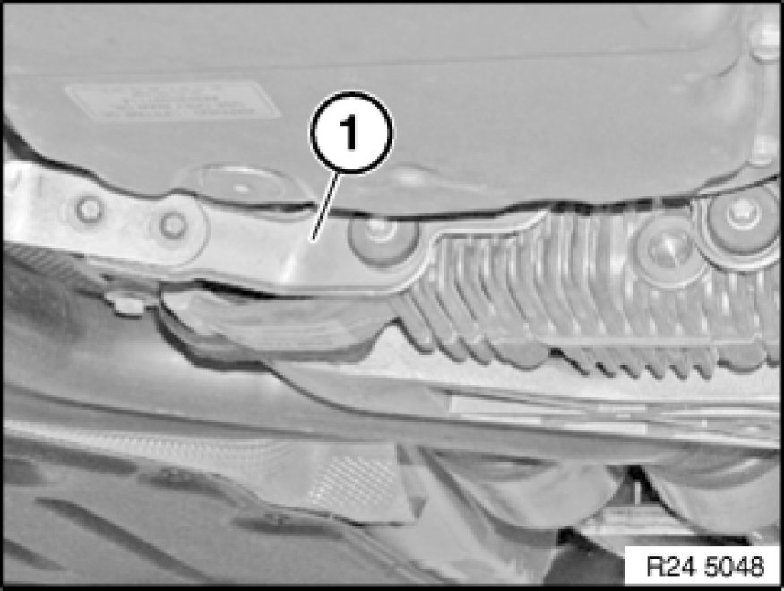
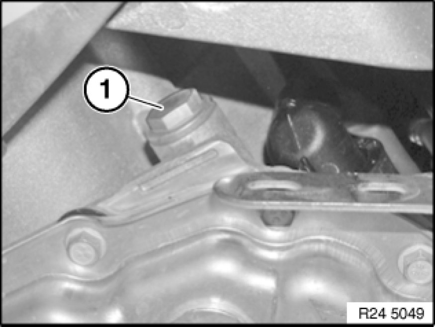

Procedures
00 11 237 - Checking/topping up fluid level in automatic transmission (GA6L45R)

Important!
Use only the approved transmission fluid.
Failure to comply with this requirement will result in serious damage to the automatic transmission!

Remove exhaust system bracket (1).

Topping up transmission fluid after a repair:
Stand vehicle on a level surface and secure against rolling off.
Undo filler plug (1).
Installation:
Replace sealing ring.
Top up transmission fluid until it emerges from filling orifice.
Start engine.
Replenish transmission fluid until it emerges from filling orifice.
Screw in filler plug (1).
Tightening torque: 24 11 7AZ Transmission Housing, Transmission Oil Sump.
Press brake pedal to floor and shift through all gears several times at idle speed. Then shift to "P" position (Park).
Then check fluid level.
Checking fluid level:
- Connect BMW Diagnosis and Information System (DIS) to vehicle.
- Call up Service functions (drive).
- Carry out fluid level check in accordance with instructions.